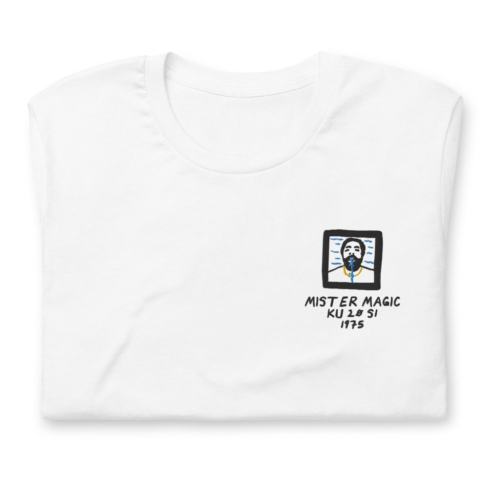
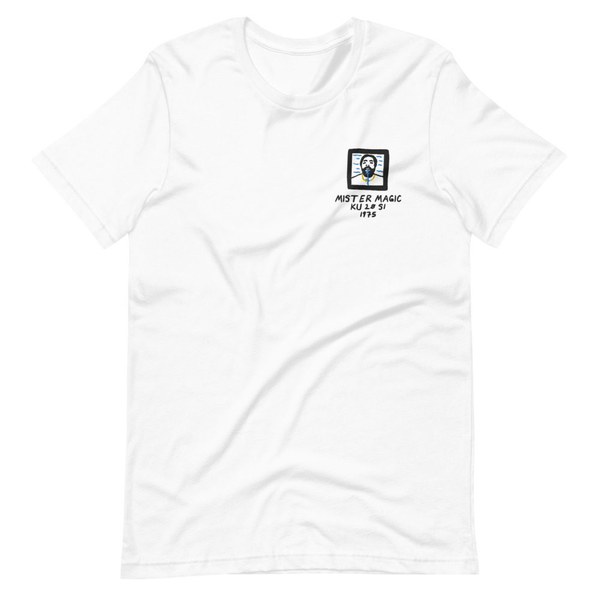

Grover Washington, Jr. – Mister Magic
Bob James arranged it. Recorded at Van Gelder.
LP · Kudu KU 20 S1 · 1975
Ungraded, checked before it ships
Comes with its own shirt: a white tee embroidered on the chest with my drawing of the cover over its title, catalog number and year. Pick a size at checkout. It’s made for you and ships on its own.


Buy $58
Play a track
Side 1
- Earth Tones12:23
- Passion Flower5:34
Side 2
- Mister Magic9:11
- Black Frost6:07
Alto Saxophone, Soprano Saxophone
Grover Washington, Jr.
Tenor Saxophone
Grover Washington, Jr., Jerry Dodgion
Baritone Saxophone
Phil Bodner
Bass Trombone
Tony Studd
Cello
Alan Shulman, Charles McCracken
Drums
Harvey Mason
Electric Piano, Piano
Bob James
Flugelhorn, Trumpet
Jon Faddis, Marvin Stamm
Guitar
Eric Gale
Percussion
Ralph MacDonald
Trombone
Wayne Andre
Viola
Alfred Brown, Emanuel Vardi
Violin
David Nadien, Harold Kohon, Harry Glickman, Harry Lookofsky, Joe Malin, Matthew Raimondi, Max Ellen, Paul Gershman
Bass
Phil Upchurch, Gary King
Produced by Creed Taylor · Conducted by Bob James